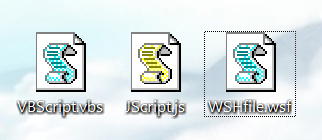

Jscript for WSH
告别批处理，使用WSH做更强大的脚本。为什么不直接使用VBScript呢？因为不喜欢它的语法，所以选择易懂的Jscript作首选语言！
Jscript技巧
运行Jscript使用的Host默认为WScript.exe。很不喜欢这样的窗口方式，提示信息会不停的弹窗。如果想要做一些复杂的界面，要借助于IE浏览器的ActiveX来做，并且要引入一个.html文件，这样的话就不能在一个脚本里面完成所有的事情！因此采用Console显示脚本运行情况更加合适。
创建如下几个文件，如果图标可以正常显示，说明当前操作系统支持WSH2:

.WSF 文件格式
微软定义的新的.WSF文件格式处理脚本,内联代码如下:
hello.wsf
<?xml version="1.0" encoding="ISO-8859-1"?>
<job id="T1">
<script language="VBScript">
<![CDATA[
text = "world"
WScript.Echo "Hello, " & text
]]>
</script>
</job>
也可以引用外部文件
hello.wsf
<?xml version="1.0" encoding="ISO-8859-1"?>
<job id="T1">
<script language="JScript" src="Hello.js"/>
<script language="VBScript">
<![CDATA[
WScript.Echo "Hello, world number 2"
]]>
</script>
</job>
Tips:文件名后缀必须是.js
使用console的Input&Output
由于脚本并不知道使用者的Host环境，可能是CScript.exe也可能是WScript.exe,所以脚本本身要强制使用CScript.exe。
新建文件yourscript.js:
function IsCSript(){
var isCScript=false;
if(WScript.FullName.toLowerCase().indexOf('cscript')!==-1){
isCScript=true;
}
return isCScript;
}
if(!IsCSript()){
var WshShell = WScript.CreateObject('WScript.Shell');
WshShell.Run('CScript.exe '+WScript.ScriptFullName,1);//第二个参数代表窗口风格,intWindowStyle
WScript.Quit(); //Terminate script.
}
WScript.Echo('Current Host is: CScript.exe');
WScript.StdIn.Read(1);//Equivalent to "pause" in .cmd file
示例代码是一个强制使用CScript.exe的模板，使用的时候，只需将最后两行代码置换成自己的逻辑代码即可！
编写console交互式应用
console.js
WScript.StdOut.WriteLine('Please enter your name:');
var userName=WScript.StdIn.ReadLine();
WScript.StdOut.WriteLine('Your name is : '+userName);
WScript.StdOut.WriteBlankLines(3);//输出3空行
WScript.StdOut.Write('Please press the Enter key to quit the script!');
WScript.StdIn.Read(1);
扫描磁盘
- 使用递归来遍历文件和文件夹
recursive.js
WScript.Echo('Scan Disk:')
var fso=WScript.CreateObject('Scripting.FileSystemObject');
var oDrives=new Enumerator(fso.Drives)
for(;!oDrives.atEnd();oDrives.moveNext()){
var item=oDrives.item();
//disk usable and is harddisk
if(item.IsReady&&item.DriveType===2){
GetFile(item.RootFolder.Path);
}
}
WScript.StdOut.Write('Please press the Enter key to quit the script!');
WScript.StdIn.Read(1)
function GetFile(path){
var folder=fso.GetFolder(path);
var files=new Enumerator(folder.Files);
for(;!files.atEnd();files.moveNext()){
var ifile=files.item();
if(ifile.Name.toLowerCase()==='git-bash.exe'){
WScript.Echo(ifile.Name+' is founded!');
return true;
}
}
var subFolders= new Enumerator(folder.SubFolders);
for(;!subFolders.atEnd();subFolders.moveNext()){
var cfolder=subFolders.item();
if(GetFile(cfolder.Path)){
return true;
}
}
return false;
}
- 使用WMI(Windows Management Instrumentation)对象查找文件
GetObject vs WScript.GetObject
GetObject和WScript.GetObject的不同.前者是Jscript的native code而后者是WScript对象的method. 连接访问WMI对象要使用GetObeject(jscript-native code)否则会报错！
scandisk.js
WScript.Echo('Scan Disk: beginning search ... ')
var fso=WScript.CreateObject('Scripting.FileSystemObject');
var oDrives=new Enumerator(fso.Drives)
for(;!oDrives.atEnd();oDrives.moveNext()){
var item=oDrives.item();
//disk usable and is harddisk
if(item.IsReady&&item.DriveType===2){
if(GetFile(item.Path,'git-bash','exe')){
break;
};
}
}
WScript.StdOut.Write('Please press the Enter key to quit the script!');
WScript.StdIn.Read(1)
function GetFile(driveCode,fileName,extName){
var wmiService=GetObject('winmgmts:\\\\.\\root\\cimv2');
var fileName='git-bash';
var extName='exe';
var query="Select * From CIM_DataFile Where Drive='"+driveCode
+"' And FileName='"+fileName+"' And Extension='"+extName+"'";
var files=new Enumerator(wmiService.ExecQuery(query));
for(;!files.atEnd();files.moveNext()){
var item=files.item();
WScript.Echo('is founded!: '+item.Name);
return true;
}
return false;
}
参考文献
Windows Script Host
Jscript参考手册